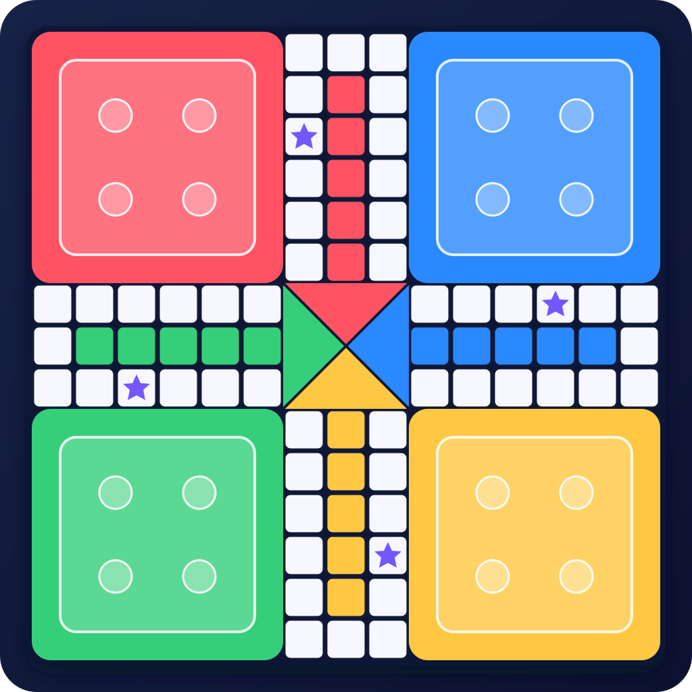

Szybkie mecze, płynne animacje i emocje do ostatniego pionka.
● KLASYCZNA GRA. NOWA ENERGIA.Jedna plansza.
Jedna plansza.
Cztery kolory.
Zero litości.
3Games Ludo przenosi kultową planszówkę do dynamicznego, nowoczesnego świata. Graj lokalnie, rywalizuj ze znajomymi i zostań królem planszy.
Obserwuj rozwój ↓PCANDROIDWEB PÓŹNIEJ

WIĘCEJ NIŻ RZUT KOSTKĄProste zasady.
Proste zasady.
Wielkie emocje.
Znajoma rozgrywka dopracowana
dla współczesnych graczy.
Lokalnie na jednym urządzeniu, a w przyszłości również przez sieć.
Kolory, plansze i elementy do odblokowania podczas gry.
Projektowana dla Windowsa, Androida i późniejszej wersji webowej.
PROJEKT W PRODUKCJI
Gotowy na pierwszy rzut?
3Games Ludo powstaje. Wersja webowa pojawi się tutaj w późniejszym etapie projektu.